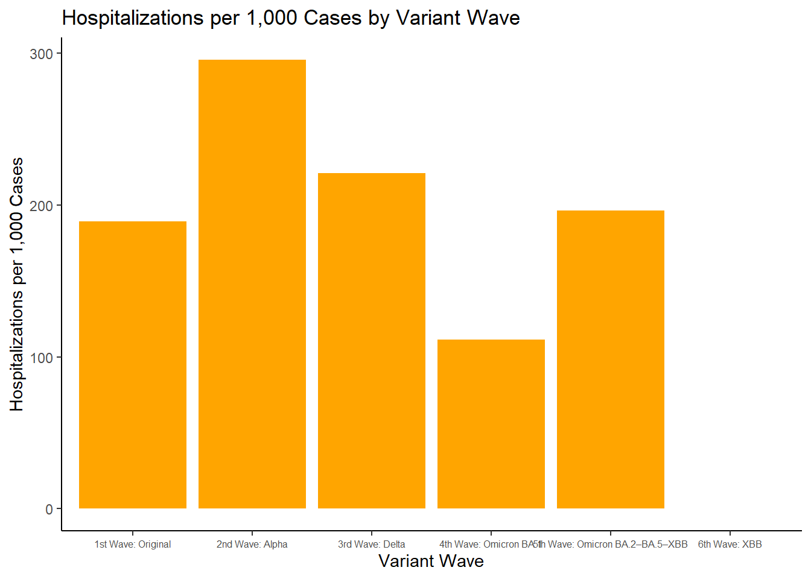
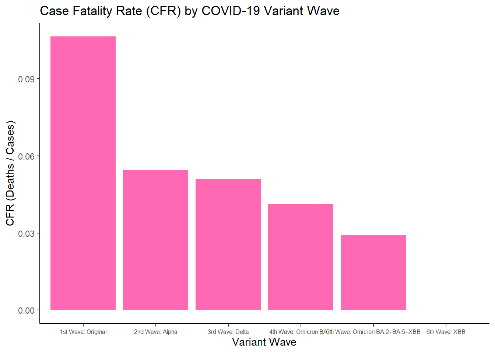
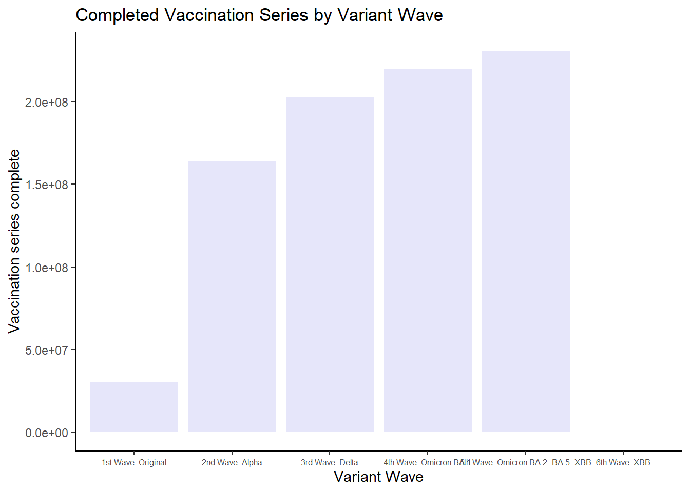
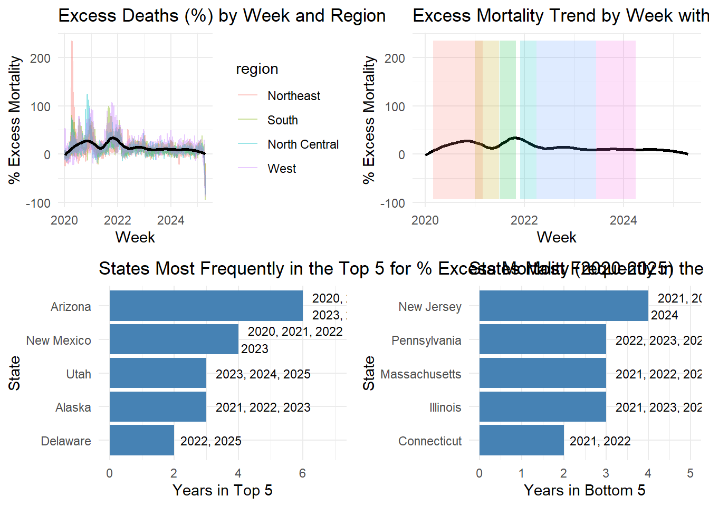

Impact of COVID-19 on Mortality in the United States: A Temporal and Regional Analysis
Author
Author Name
Published
2025-04-24
Indhira Vadivel, Isha Khapre, Medha Rao
Abstract
Abstract
The COVID-19 pandemic has had a dynamic and multifaceted impact on mortality in the United States, evolving through successive waves marked by distinct viral variants. These shifts were accompanied by changes in clinical severity, population immunity, and public health strategies. Understanding the temporal, regional, and epidemiological trends in both confirmed COVID-19 deaths and excess mortality is essential for evaluating the broader consequences of the pandemic and informing future health interventions.
Background
The COVID-19 pandemic has had a dynamic and multifaceted impact on mortality in the United States, evolving through successive waves marked by distinct viral variants. These shifts were accompanied by changes in clinical severity, population immunity, and public health strategies. Understanding the temporal, regional, and epidemiological trends in both confirmed COVID-19 deaths and excess mortality is essential for evaluating the broader consequences of the pandemic and informing future health interventions.
Methods
We analyzed weekly state-level mortality data from the CDC and NCHS from January 2020 to April 2025. COVID-19 variant waves were defined based on CDC reports and overlaid with death trends, hospitalization rates, and vaccination coverage. We calculated rolling averages, case fatality rates, hospitalizations per 1,000 cases, and excess deaths by comparing observed mortality to pre-pandemic baselines. Statistical comparisons and regression models assessed the influence of COVID-19, pneumonia, influenza, and vaccination rates on excess mortality.
Results
Mortality peaked during the Original and Delta waves, followed by a decline in the Omicron period. CFRs and virulence metrics decreased consistently across waves. Geographic disparities persisted, with Southern and Western states reporting higher per capita death rates. Excess deaths often exceeded reported COVID-19 deaths, particularly in early 2020. Pneumonia and influenza were significant contributors to excess mortality. Vaccination coverage increased over time and was negatively associated with excess deaths.
Discussion
Our findings highlight the pandemic’s evolving severity, the protective role of vaccination, and ongoing regional disparities. Misclassification and indirect effects contributed to underreported COVID-19 mortality. These results emphasize the importance of robust surveillance, equitable healthcare access, and variant-specific public health strategies moving forward.
Introduction
The COVID-19 pandemic represents one of the most consequential public health crises of the 21st century. Since the first confirmed U.S. cases in early 2020, the nation has faced an evolving series of challenges in containing the virus, managing its health effects, and grappling with its far-reaching societal disruptions. The initial phase of the pandemic was marked by limited testing, widespread uncertainty, and rapidly rising transmission rates, quickly escalating the crisis to a national emergency. Over time, the landscape of the pandemic shifted as vaccines were developed and deployed, public health strategies adapted, and the virus evolved into new variants. By early 2025, COVID-19 had transitioned from an acute pandemic into a more endemic condition—still impactful, but with changing dynamics.
This paper presents a comprehensive analysis of COVID-19 mortality in the United States from 2020 through early 2025. Our central goal is to visualize and interpret how death rates changed over time, with a focus on identifying and characterizing distinct “waves” of elevated mortality. These pandemic waves, defined by periods of increased case counts and deaths, offer valuable insight into how the virus spread, how new variants influenced severity, and how public health responses shaped outcomes. Understanding these trends is crucial for contextualizing the overall trajectory of the pandemic.
Importantly, the effects of COVID-19 were not experienced uniformly across the country. States and regions varied widely in the timing, intensity, and consequences of outbreaks. Differences in public health policies, population density, health care capacity, vaccination uptake, and social behaviors all contributed to this geographic variation. To better understand these disparities, we examine the spatial distribution of COVID-19 deaths and excess mortality at both the state and U.S. Census region levels.
A key focus of our analysis is on how mortality patterns changed across successive waves. Early variants of the virus were associated with high death rates, particularly among older adults and those with pre-existing conditions. However, as more transmissible variants like Delta and Omicron emerged, the profile of disease severity shifted. We explore how rising population immunity—through vaccination and prior infection—alongside improved treatment strategies may have contributed to changing patterns of mortality risk.
Beyond official COVID-19 deaths, we analyze excess mortality as a broader metric of the pandemic’s toll. This measure captures deaths above expected baselines, encompassing not only directly attributed COVID-19 fatalities but also indirect deaths caused by disruptions to health care, mental health impacts, and economic instability. By comparing excess mortality across states and over time, we aim to identify consistent patterns and investigate whether some states faced disproportionate impacts.
Finally, we consider the possibility of misclassified deaths, especially during the early stages of the pandemic when testing capacity was limited. By analyzing trends in pneumonia-related mortality, which may overlap clinically with COVID-19, we explore whether some early fatalities were undercounted or misattributed.
Through this multifaceted approach, our study provides a data-driven account of the COVID-19 pandemic’s evolving impact in the United States. By integrating time trends, geographic disparities, and clinical indicators, we aim to contribute to a deeper understanding of the crisis and inform strategies for managing future infectious disease threats.
Methods
To analyze COVID-19 mortality trends and excess deaths in the United States from 2020 to 2025, we obtained publicly available data from the Centers for Disease Control and Prevention (CDC). Specifically, we accessed datasets containing information on confirmed COVID-19 cases, hospitalizations, deaths, and vaccination coverage through the CDC’s open data portal (https://data.cdc.gov/), using API endpoints and automated querying. The datasets used included:
COVID-19 Cases
COVID-19 Hospitalizations
COVID-19 Deaths
COVID-19 Vaccinations
Historical Pneumonia Deaths (2013-2019)
To streamline data access and ensure reproducibility, we built a custom function in R using the httr2 package, which allowed for efficient API calls and retrieval of large datasets (up to 10 million records per query).
Visualization and Analysis of Covid-19 Deaths
Data Processing and Cleaning We used a state-level COVID-19 mortality dataset and excluded national aggregates to focus on regional and state-specific trends. Dates were converted to Date format, and MMWR week and year variables were derived using the epiyear() and epiweek() functions from the epitools package. COVID-19 death counts were converted to numeric values, and only data from January 1, 2020, onwards were retained. All variable names and formats were standardized using the janitor package to ensure consistency.
Computation of Daily and Rolling Mortality Trends To explore national mortality trends, daily COVID-19 deaths were aggregated across states, and a 7-day rolling average was computed using the zoo package to smooth short-term fluctuations. This time series enabled identification of major waves in mortality patterns.
Wave Classification and Variant Overlay We manually defined six distinct pandemic waves corresponding to dominant SARS-CoV-2 variants based on CDC reports and literature. These wave periods were labeled using the tibble package and overlaid as shaded intervals onto national mortality plots using ggplot2::geom_rect() alongside the rolling average trend line.
State-Level Quarterly Mortality Visualization We created a heatmap of state-level COVID-19 deaths by calendar quarter to explore geographic variation. Weekly data were aggregated to state-quarters using lubridate::quarter() and visualized with geom_tile() and the viridis::magma color scale, enabling comparison across regions and time.
Integration of Population and Regional Data State-level population estimates from 2020–2024 were retrieved from https://api.census.gov/dataand were merged with weekly death data to calculate per capita mortality rates. Regional classification data were parsed from a JSON file and joined with state data. Weekly observations were matched by state and year using MMWR-aligned dates, resulting in a unified dataset (datdeaths) for regional and temporal analysis.
COVID-19 Death Rates by Variant Wave and Region Weekly deaths were categorized into six pandemic waves. For each wave and region, we calculated average weekly COVID-19 death rates per 100,000 people using population-matched data. Bar plots and line graphs visualized regional differences, while tables and faceted bar charts highlighted top states by mortality within each wave.
Temporal Trends of COVID-19 Deaths by State We identified the top five states with the highest wave-specific death rates and plotted weekly deaths over time using faceted line plots. LOESS curves were overlaid to visualize trends, allowing comparison across states and variant periods.
Identification of Top States by Annual COVID-19 Death Rate To highlight states most impacted annually, we computed yearly death rates per 100,000 population for each state (2020–2024). The top state per year (based on death rate) was identified and displayed in a summary table. A corresponding bar plot illustrated these top states over time, aiding in the visualization of annual mortality burdens and shifts in geographic impact.
Excess Deaths Analysis
We analyzed excess mortality during COVID-19 using CDC data on weekly deaths, vaccinations, and NCHS records on pneumonia and influenza from 2013–2020. Our goals included assessing respiratory illness and vaccination impacts, examining temporal and regional mortality trends, and evaluating COVID-19’s role in unexplained deaths.
Data Pre-Processing
Dates were standardized (yyyy-mm-dd), and data was filtered to include only weekly records for the 50 U.S. states. We removed rows with missing death data and dropped irrelevant columns (data_as_of, footnote, group, month).
Standardized Excess Deaths were calculated as: \[
\%\ \text{Change} = \left( \frac{\text{Excess Deaths}}{\text{Expected Deaths}} \right) \times 100
\] Excess deaths were changed to % Change in Expected Deaths (% Excess Mortality), so that they could be compared relatively.
Temporal & Regional Trends
Using ggplot2, we visualized weekly % excess deaths by region (Northeast, South, North Central, West) from Mar 2020–Apr 2025. Trends were smoothed using loess and animated with gganimate. COVID variant waves (Alpha, Delta, Omicron) were overlaid.
Top/Bottom 5 States by Excess Mortality
We identified states most frequently in the top and bottom 5 for % excess mortality by year (using epiyear) on the week_ending_date column. The average percent change in expected mortality was calculated for each year with the formula: \[
\%\ \text{Change in Expected Deaths} = \left( \frac{\text{Average Excess Deaths}}{\text{Average Expected Deaths}} \right) \times 100
\]
Results were shown via horizontal bar charts with year annotations.
COVID-19 & Excess Deaths
A regression model (lm()) evaluated the relationship between COVID-19 deaths and excess deaths:
Non-COVID excess deaths were calculated and plotted where excess deaths > 0.
Data Harmonization & Merging
Vaccination data was aggregated weekly by state. Dates, week numbers, and year labels were cleaned. State abbreviations were expanded. The data was merged with the death dataset by year, week, and state.
Deaths from pneumonia alone were computed: \[
\text{Pneumonia-Only Deaths} = \text{Pneumonia Deaths} - (\text{Pneumonia + COVID-19 Deaths})
\]
Multivariate Modeling
We fit a linear model to predict excess mortality:
These residuals were visualized over time to assess pneumonia’s explanatory power in COVID-era excess mortality.
Results
Figure 1
#getwd()source("./code/finalprojectcode.R")
Warning: package 'httr2' was built under R version 4.4.2
Warning: package 'lubridate' was built under R version 4.4.3
Warning: package 'janitor' was built under R version 4.4.2
Warning: package 'tidyverse' was built under R version 4.4.2
Warning: package 'zoo' was built under R version 4.4.2
Warning: Using `size` aesthetic for lines was deprecated in ggplot2 3.4.0.
ℹ Please use `linewidth` instead.
Warning: package 'jsonlite' was built under R version 4.4.3
Warning: package 'patchwork' was built under R version 4.4.2
Warning: package 'MMWRweek' was built under R version 4.4.3
`summarise()` has grouped output by 'state', 'mmwr_week'. You can override
using the `.groups` argument.
`summarise()` has grouped output by 'date', 'location', 'mmwr_year'. You can
override using the `.groups` argument.
Attaching package: 'data.table'
The following objects are masked from 'package:zoo':
yearmon, yearqtr
The following object is masked from 'package:purrr':
transpose
The following objects are masked from 'package:lubridate':
hour, isoweek, mday, minute, month, quarter, second, wday, week,
yday, year
The following objects are masked from 'package:dplyr':
between, first, last
Warning: package 'rcompanion' was built under R version 4.4.3
Warning: Removed 1 row containing missing values or values outside the scale range
(`geom_col()`).

Warning: Removed 1 row containing missing values or values outside the scale range
(`geom_col()`).

Warning: Removed 1 row containing missing values or values outside the scale range
(`geom_col()`).

Figure 1(top left) illustrates weekly COVID-19 death counts in the United States from 2020 through early 2025, overlaid with periods corresponding to six major variant waves. The highest peak occurred during the 1st Wave (Original strain) in late 2020 to early 2021, surpassing 100,000 weekly deaths at its peak. A secondary spike occurred during the 3rd Wave (Delta variant) in mid-to-late 2021, with a notable rise again in early 2022 during the 4th Wave (Omicron BA.1). Following this period, death counts steadily declined, with subsequent waves showing relatively smaller surges. The visualization underscores a sharp decline in mortality as newer Omicron subvariants emerged, suggesting changes in population immunity, viral virulence, or treatment efficacy over time.
Figure 1(top-right) displays a heatmap of quarterly COVID-19 deaths across U.S. states. The highest death tolls are concentrated between Q4 2020 and Q1 2022, with particularly high numbers in California, Texas, Florida, and New York during these periods. Some states in the South and West, such as Arizona, Mississippi, and Alabama, consistently showed elevated death counts across multiple quarters. After Q2 2022, COVID-19 deaths declined significantly across all states and remained at lower levels through 2024 and early 2025. This heatmap highlights temporal and geographic heterogeneity in mortality, potentially linked to health infrastructure, public health responses, and socio-demographic factors.
Figure 1(bottom-left) shows the trend in COVID-19 death rates (per 100,000 people) by U.S. region across the six variant waves. The Southeast region exhibited the highest death rate during the 1st Wave, exceeding 3,900 deaths per 100,000. Although all regions experienced a general decline in death rates across waves, the South Central and Mountain States consistently reported higher mortality compared to other regions, such as New England or the Pacific Northwest. This trend suggests regional disparities in pandemic impact that persisted even as the virus evolved and vaccines became widely available.
Figure 1(bottom-right) focuses on the top five states with the highest death rates per 100,000 for each wave. The affected states varied across waves, with Mississippi, Alabama, and Oklahoma appearing frequently in the top ranks. The 2nd Wave (Alpha) was notable for a shift toward northeastern states, including New Jersey and Pennsylvania. During the Delta and Omicron waves, Southern and Appalachian states, including Kentucky, West Virginia, and Tennessee, were disproportionately represented. Puerto Rico also emerged during the 5th Wave, illustrating how regional vulnerabilities extended beyond the continental U.S.
Figure X
`geom_smooth()` using formula = 'y ~ x'
`geom_smooth()` using formula = 'y ~ x'

Figure X presents visualizations (A–D with A being the left top, B being the right top, C being the bottom left, and D being the bottom right) of excess mortality trends across U.S. regions during the COVID-19 pandemic. Panel A shows a similar trend in excess mortality across regions, with the Northeast experiencing a sharp early spike in 2020, followed by lower excess deaths compared to other regions. The West had slightly higher excess deaths on average. Loess smoothing revealed national peaks in December 2020 and 2021, aligning with major COVID-19 surges. Panel B highlights these spikes, particularly during the early 2020 and Delta waves. Panels C and D show states most frequently in the top and bottom five for excess mortality. Arizona and New Mexico were often in the top five, while New Jersey appeared in the bottom five four out of six years, indicating lower excess mortality.
Table 1
relabelled_table
Regression Results: Predicting Excess Deaths
Term
Estimate
P-Value
Intercept
24.4074801
0.0000000
Deaths by Covid-19
0.8682392
0.0000000
Deaths by Pneumonia Only
0.9635193
0.0000000
Influenza Deaths
2.0824037
0.0000000
Vaccination Series Complete
-0.0001267
0.0000000
I(pneumonia_deaths_alone * covid_19_deaths)
0.0011283
0.0000000
I(influenza_deaths * covid_19_deaths)
-0.0035714
0.0404551
The multiple linear regression model showed a strong fit, with an Adjusted R² of 0.8239 and a p-value of p < 2.2 × 10⁻¹⁶, indicating that over 82% of the variance in excess deaths was explained by the predictors. COVID-19 deaths were a significant positive predictor (β = 0.868, p < 2 × 10⁻¹⁶), underscoring the pandemic’s central role in excess mortality. Pneumonia deaths also significantly contributed (β = 0.964, p < 2 × 10⁻¹⁶), with a significant positive interaction term between pneumonia and COVID-19 deaths (β = 0.00113, p < 2 × 10⁻¹⁶). Influenza deaths were a positive predictor (β = 2.082, p = 3.84 × 10⁻⁸), though the interaction with COVID-19 deaths was negative and marginally significant (β = –0.00357, p = 0.0405), suggesting potential redundancy or overcounting in death certifications. Vaccination rates were negatively associated with excess mortality (β = –1.27 × 10⁻⁴, p < 2 × 10⁻¹⁶), indicating a protective effect. These results highlight the significant roles of COVID-19, pneumonia, and influenza in excess mortality, with vaccinations helping to reduce deaths, and suggest potential misclassification of some COVID-19 deaths as pneumonia.
Figure Y explores the relationship between COVID-19 deaths, excess mortality, and pneumonia-related mortality across the pandemic timeline (A–D with A being the left top, B being the right top, C being the bottom left, and D being the bottom right). Panel A demonstrates a clear positive association between weekly COVID-19 deaths and excess mortality. This suggests that increases in reported COVID-19 deaths were strongly aligned with increases in total excess deaths, supporting COVID-19 as a prominent driver of excess mortality during the pandemic. Panel B reveals that, on average, a substantial proportion of excess deaths were not directly attributed to COVID-19 deaths alone. This gap indicates that official COVID-19 death counts may underrepresent the true mortality burden of the pandemic, due to indirect effects or potential misclassification of cause of death. Panel C shows the number of positive excess pneumonia deaths compared to historical expectations across 2020-2025. Instances where pneumonia mortality exceeded expected levels were treated as possible indicators of misclassification of covid-19 as pneumonia or death by pneumonia as a secondary effect of covid-19. These discrepancies were most apparent in early 2020, prior to widespread testing, and at the end of 2022. Panel D further evaluates the impact of pneumonia-related mortality on overall excess deaths as a potential source of COVID-19 misclassification and residual excess deaths. While pneumonia deaths appeared elevated at certain points, they did not account for the majority of unexplained excess mortality.
Discussion
This study presents a comprehensive analysis of COVID-19 mortality in the United States from 2020 through early 2025, revealing key temporal, geographic, and variant-specific patterns, as well as shifts in disease severity and excess mortality over time. Our findings show that the overall burden of COVID-19 deaths peaked during the early stages of the pandemic and again during the Delta wave, with mortality declining substantially during the later Omicron waves. This trajectory suggests the influence of evolving viral characteristics, population-level immunity, public health interventions, and improvements in clinical management. Geographically, we observed persistent disparities in mortality throughout the pandemic. Southern and Appalachian states, along with parts of the Midwest, consistently experienced higher death rates compared to other regions. These states frequently appeared among the top five in per capita COVID-19 mortality during multiple variant waves. Factors likely contributing to these disparities include lower vaccination coverage, higher prevalence of chronic diseases, and reduced access to healthcare resources. Conversely, northeastern states, which were heavily affected in the initial wave, appeared less frequently in later waves, possibly due to early surges driving more robust public health responses or higher subsequent immunity. These trends highlight the ongoing importance of addressing structural health inequities in regional pandemic preparedness. Temporal analysis across variant waves revealed a non-linear trend in hospitalization and mortality metrics. Although hospitalizations per 1,000 cases decreased between the Original and Delta waves, they resurged during later Omicron subvariant periods, particularly BA.2 to XBB. This bimodal trend may reflect a dynamic virulence-immunity tradeoff, where the virus evolved to maintain high transmissibility despite partial immune protection in the population. In contrast, case fatality rates (CFRs) declined steadily across waves. This monotonic decline, confirmed through chi-squared comparisons and mortality rate ratios, points toward a genuine reduction in disease severity over time. Likely contributing factors include mass vaccination, earlier detection and treatment, as well as accumulated population immunity through prior infection. Still, these patterns must be interpreted within a broader public health context. Vaccination coverage increased steadily across waves and was strongly associated with lower excess mortality. However, improvements in clinical management (e.g., increased use of dexamethasone and remdesivir post-2021), greater availability of home testing during Omicron surges, and high rates of prior infection (with estimates suggesting over 58% of Americans had been infected by 2023) also likely contributed to the observed reductions in severity. These interacting factors complicate efforts to attribute mortality reductions to any single cause and underscore the need for multifaceted public health strategies. Our analysis of excess mortality adds further depth to these findings. The Delta wave and the early pandemic phase were associated with the highest percentages of excess deaths, consistent with their documented impact on hospital systems and public health infrastructure (Tabatabai M et al. 2023). Western states, including Arizona and New Mexico, reported some of the highest levels of excess mortality across multiple waves, while northeastern states like New Jersey more frequently appeared among those with lower relative burden. One possible explanation for this pattern is the greater healthcare capacity in urban versus rural areas of the Northeast, which may have mitigated severe outcomes (Crankshaw, K 2023). Regression analysis also revealed important interactions among causes of death. COVID-19 deaths were the strongest predictor of excess mortality, but pneumonia-related deaths showed a significant interaction, suggesting that pneumonia often served as a secondary complication rather than a source of misclassification. Influenza, while statistically significant, had a negative interaction with COVID-19 mortality. This may reflect reduced influenza transmission due to social distancing or potential over-attribution of deaths to influenza during overlapping respiratory illness seasons. Several limitations should be acknowledged. First, mortality reporting lags—ranging from 2 to 8 weeks—introduce uncertainty in the temporal alignment of peaks and variant-specific waves. Additionally, the dataset did not distinguish between influenza-only deaths and those involving co-infections, possibly inflating influenza’s apparent impact. Moreover, home testing and shifts in death attribution practices may have affected both case and death reporting over time, particularly during the Omicron period. Despite these limitations, the findings provide critical insights into how the evolving virology of SARS-CoV-2, combined with public health responses and sociodemographic context, shaped the trajectory of the pandemic in the United States. Importantly, the regional and temporal heterogeneity in mortality reinforces the need for locally tailored strategies, ongoing surveillance, and adaptive public health responses. As new variants emerge, continued investment in vaccine development, equitable healthcare access, and data transparency will be crucial to managing future public health crises.
Citations
Woolf, S. H., Chapman, D. A., Sabo, R. T., Zimmerman, E. B. (2020). Excess Deaths From COVID-19 and Other Causes, March–July 2020. JAMA. https://doi.org/10.1001/jama.2020.19545
Faust, J. S., Du, C., Renton, B., Lin, Z., Krumholz, H. M. (2023). Excess Mortality in the United States During the First Three Years of the COVID-19 Pandemic. Lancet Regional Health – Americas.
Johns Hopkins University Coronavirus Resource Center (until its shutdown in 2023). Global and U.S.-specific COVID-19 statistics, including testing, vaccination, and mortality. https://coronavirus.jhu.edu/
Our World in Data. Global and U.S.-specific COVID-19 statistics, including testing, vaccination, and mortality. https://ourworldindata.org/coronavirus
The New York Times COVID-19 Data Archive. https://github.com/nytimes/covid-19-data
Tabatabai, M., Juarez, P. D., Matthews-Juarez, P., Wilus, D. M., Ramesh, A., Alcendor, D. J., Tabatabai, N., & Singh, K. P. (2023). An Analysis of COVID-19 Mortality During the Dominancy of Alpha, Delta, and Omicron in the USA. J Prim Care Community Health, 14, 21501319231170164. https://doi.org/10.1177/21501319231170164. PMID: 37083205; PMCID: PMC10125879.
Crankshaw, K. (2023, June 27). The South had highest disability rate among regions in 2021. Census.gov. https://www.census.gov/library/stories/2023/06/disability-rates-higher-in-rural-areas-than-urban-areas.html